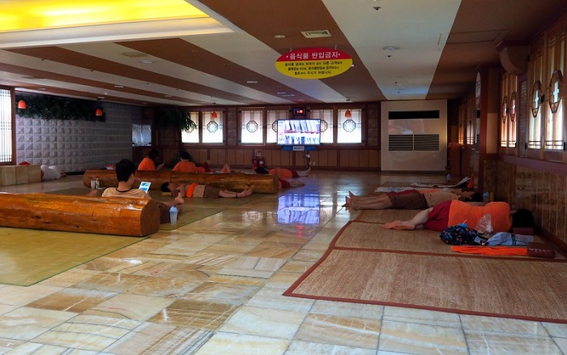
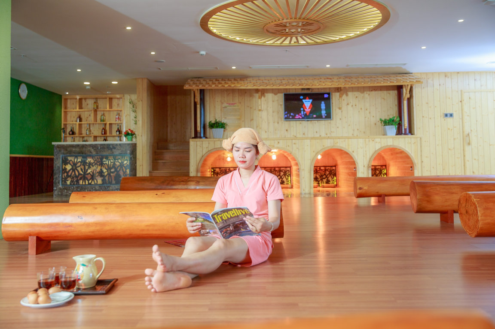
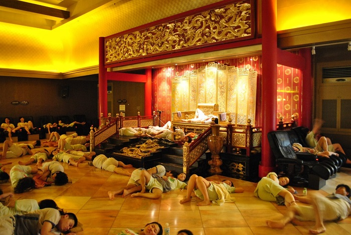
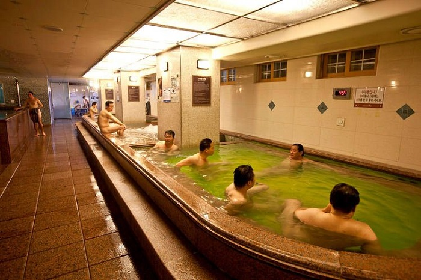
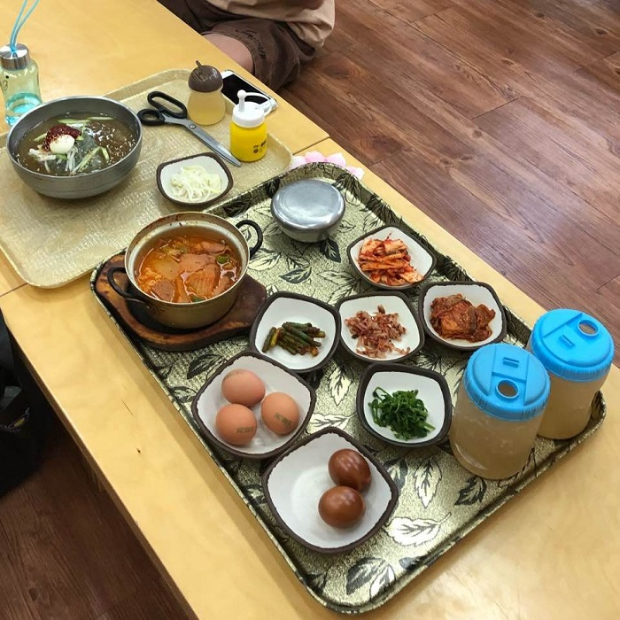
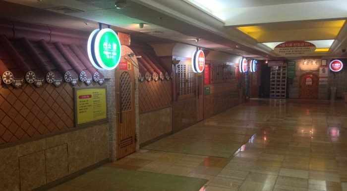

Du lịch Hàn Quốc
Welcome to Korea
Welcome to Korea
Du lịch Hàn Quốc các bạn sẽ có cơ hội được trải nghiệm vô vàn những điều thú vị và hấp dẫn. Trong số đó có một trải nghiệm mà bạn không nên bỏ qua đó chính là thử tắm hơi tại Hàn Quốc. Vậy những lưu ý khi đi tắm hơi ở Hàn Quốc là gì? Hãy đọc bài viết dưới đây để có câu trả lời nhé.
Tắm hơi hay còn được biết đến với cái tên Jjimjilbang là một nét văn hóa độc đáo và vô cùng phổ biến tại Hàn Quốc. Trong tiếng Hàn từ Jjimjilbang là từ ghép của “Jjimjil” có nghĩa là “xông hơi” và từ “bang” có nghĩa là phòng. Dù vào bất cứ mùa nào, điều kiện thời tiết nào thì người Hàn Quốc cũng đều có thể đi tắm hơi được. Sau những giờ làm việc và học tập căng thẳng, được thư giãn trong phòng tắm hơi sẽ khiến cho mọi âu lo, mệt mỏi như được giải tỏa.
Người Hàn Quốc hiếm khi đi tắm hơi một mình. Họ thường đi từ ít nhất 2 người trở lên. Tắm hơi cũng không giới hạn về độ tuổi, giới tính hay nghề nghiệp. Hầu như ở tất cả các quận huyện, phường của Hàn Quốc đều có những phòng tắm hơi.
Theo kinh nghiệm đi tắm hơi ở Hàn Quốc thì giá vé tại các phòng tắm hơi nhìn chung khá rẻ. Giá vé thường sẽ dao động trong khoảng từ 6000 đến 12000 won (Tương đương khoảng từ 125,000đ đến 250,000đ / 1 người). Nếu đi vào buổi tối thì giá thường cao hơn ban ngày khoảng 2000 won (khoảng 40,000đ).
Khi bước vào các phòng tắm hơi tại Hàn Quốc, điều đầu tiên mà bạn sẽ nhìn thấy đó là hệ thống rất nhiều những ngăn tủ nhỏ. Đây là những ngăn tủ để đựng giày. Bạn chỉ cần tháo giày của mình ra, để vào trong một ngăn tủ nào đó sau đó khóa lại. Đừng quên đem chìa khóa đến quầy lễ tân để gửi và mua vé vào cửa nhé. Sau khi mua vé bạn sẽ được nhận một chìa khóa tủ đồ, một khăn tắm và một bộ pyjama được làm bằng chất liệu vải cotton. Đây là điều cần lưu ý khi đi tắm hơi ở Hàn Quốc đầu tiên bạn cần nắm được.
Trước khi vào xông hơi thì bạn bắt buộc phải tắm qua bằng vòi hoa sen tại những khu vực dành riêng cho nam và nữ. Một lưu ý khi đi tắm hơi ở Hàn Quốc bạn cần nhớ đó là nên mang theo dầu gội, dầu xả. Vì tại các khu vực tắm thường chỉ có xà phòng thôi. Có hai loại bể tắm là bể nóng và bể lạnh. Nếu bạn là người Việt Nam lần đầu tiên đi tắm hơi thì có thể bạn sẽ thấy ngại ngùng khi bước vào trong bể và thấy mọi người xung quanh đều trong trại thái Nude. Tuy nhiên đây cũng chỉ là chuyện rất đỗi bình thường tại các phòng tắm hơi tại Hàn Quốc mà thôi. Sẽ chẳng có ai để ý đến bạn đâu. Bạn cần lưu ý tại tuyệt đối không được chụp hình tại khu vực này nhé.
Sau khi đã ngâm mình chán chê trong bể thì cơ thể của bạn chắc chắn sẽ thấy nhẹ nhõm và thoải mái hơn nhiều. Khi đó bạn hãy lên và đi thay bộ trang phục pyjama được phát lúc đầu vào và đến thư giãn tại khu vực chung. Ở khu vực này có để sẵn chăn ga gối. Bạn có thể nằm ngủ một giấc hoặc xem tivi tùy thích.
Ở khu vực ăn uống sẽ có nước trà xanh lạnh, xà phê hay Sikhye, bánh gạo và trứng luộc. Đây đều là những món đồ ăn thức uống đặc trưng tại các phòng tắm hơi của hàn Quốc. Bạn đừng bỏ qua cơ hội thưởng thức chúng nhé.
Sau khi ngồi trò chuyện với bạn bè ở khu vực chung rồi thì tiếp đến bạn sẽ vào phòng xông hơi. Khi vào phòng xông hơi bạn nhớ thực hiện theo đúng 3 công đoạn để làm tăng hiệu quả hơn nhé. Công đoạn đầu tiên là xông hơi với nước để làm cho lỗ chân lông giãn ra. Công đoạn thứ hai là xông hơi với thảo dược và công đoạn cuối cùng là đến phòng đá lạnh để các lỗ chân lông được se khít lại.
GỢI Ý TOUR DU LỊCH HÀN QUỐC |
|---|
>> Hà Nội – Hàn Quốc: Busan – Seoul 6 Ngày Bay Vietnam Airlines chỉ với 15.490.000 đồng
|
Theo kinh nghiệm đi tắm hơi ở Hàn Quốc thì các bạn chỉ nên ngâm mình dưới bể nước khoảng 20 phút thôi. Nếu muốn ngâm lâu hơn thì bạn nên để ngực ở phía trên mực nước. -Khi ngâm mình trong bể thì tránh đùa nghịch làm nước bắn tung tóe. Gây ảnh hưởng đến những người xung quanh. -Những ai bị huyết áp hoặc bị bệnh tim thì không nên xông hơi quá 30 phút. Đây là một lưu ý khi đi tắm hơi ở Hàn Quốc khá quan trọng mà bạn nên biết. Tắm hơi từ lâu đã trở thành một hoạt động cực kỳ phổ biến tại Hàn Quốc. Nó không chỉ giúp xua tan đi những căng thẳng, mệt mỏi của cuộc sống mà còn có tác dụng rất tốt đối với sức khỏe. Nếu một ngày nào đó bạn có dịp đến du lịch Hàn Quốc thì nhất định phải trải nghiệm hoạt động thú vị này nhé. Đừng quên theo dõi những tin tức du lịch Hàn Quốc mới nhất của chúng tôi.
Top 20 điểm tham quan nhất định phải ghé thăm trong hành trình chinh phục Seoul

Điện thoại: 0903357616
Email: thaontps24690@fpt.edu.vn